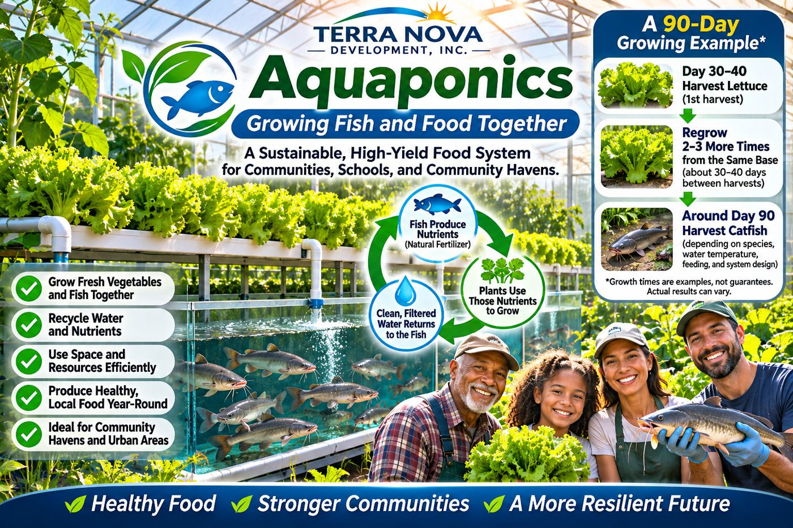

Article #009 · November 2026
Aquaponics: Growing Fish and Food Together
A sustainable approach to growing vegetables and fish for local communities.

By Willis Butts · Terra Nova Development, Inc.
TERRA NOVA DEVELOPMENT, INC.
Article #009 | Version 009 | November 2026
A Terra Nova vision for community food production, water stewardship, and shared abundance
One Greenhouse, Two Harvests
Imagine a greenhouse where fresh lettuce grows above tanks of fish. Water carries nutrients from the fish-growing system to the plants; the plants and biological filters help clean the water before it returns to the fish. One carefully managed facility can produce vegetables and fish while recycling much of its water. This is aquaponics: a combination of aquaculture (raising aquatic animals) and hydroponics (growing plants without soil). It is a promising way to connect food production with the Terra Nova philosophy of using resources wisely and making nutritious food more accessible.
The “Ninety Days Under Glass” Idea
A Facebook post shared by Clearroot Studio describes lettuce being cut after 30–40 days and regrown two or three times while catfish mature below, supposedly becoming ready around day 90. It is a compelling illustration of staggered harvests, but it should be treated as a concept rather than a verified production schedule. Lettuce varieties differ in whether and how well they regrow after cutting. Catfish typically require a growth period determined by their starting size, species, water temperature, feed, and target market weight; fish raised from small fingerlings generally cannot be assumed to reach harvest size in 90 days. A pilot should measure actual results before promising yields.
How an Aquaponics System Works
Fish are fed in tanks, and their waste enters the water. Beneficial microorganisms in biological filters convert toxic ammonia first into nitrite and then into nitrate, which plants can use. Water circulates through plant-growing beds or channels and returns to the fish system. Solids removal, aeration, monitoring, and backup power are essential. The system is not entirely self-sustaining: it needs feed, electricity, labor, water-quality testing, and sometimes added minerals or pH adjustment.
Why Terra Nova Should Explore It
A Community Haven could use a modest greenhouse to supply greens for a community kitchen and, where appropriate, locally raised fish. Such a facility could double as a teaching center, allowing volunteers, students, and retirees to share practical skills. Multiple neighborhood installations might support a regional network of food production and distribution. These are possibilities to test—not claims that aquaponics automatically makes food free or eliminates all food insecurity.
An Engineering Approach to a Pilot
Start with a small, instrumented pilot before expanding. Select fish and vegetable species suitable for local conditions. Estimate capital costs for tanks, greenhouse structures, pumps, filtration, plumbing, sensors, and climate control. Record feed inputs, electricity and water use, labor hours, fish growth, plant harvests, losses, and food safety outcomes. Compare the cost per pound of usable food with conventional supply. Build in redundant aeration and power, disease prevention, and trained operators. The pilot should be judged on reliable food output and community value—not only on an attractive demonstration.
Safety, Regulation, and Practical Limits
Fish health, water chemistry, food handling, and local permits matter. Food safety plans must address pathogens and contamination risks. Aquaponics systems also face a tradeoff: fish, plants, and nitrifying bacteria may prefer different water conditions. Greenhouse heating or cooling can be expensive. Some locations will be better suited to aquaponics than others, and not every crop or fish species is an economical choice. These limits are reasons for careful design, not reasons to abandon the idea.
A Network of Community Food Systems
Imagine Community Havens connected to local growers, aquaponics greenhouses, traditional farms, food rescue programs, and Give & Take marketplaces. Each source contributes what it can do best. Surplus can be shared, volunteers can learn new skills, and neighborhoods can become more resilient. Aquaponics would be one tool within a coordinated food system—not the entire solution.
Abundance Through Organization
Terra Nova Development begins with a question: how can we use the knowledge and resources we already possess to meet human needs more effectively? Fish, vegetables, water, energy, engineering, and willing people can be organized into productive systems. The purpose is not simply to produce more. It is to make the benefits of production accessible. There is no them. There is only us. We are one.
Source and editorial note
Inspired by the user-supplied Facebook text attributed to Clearroot Studio, “Ninety Days Under Glass.” The specific lettuce regrowth and 90-day catfish harvest claims have not been independently verified. This article expands the concept into a proposed Terra Nova initiative; it does not describe an existing Terra Nova facility.
Support Terra Nova Development: https://buymeacoffee.com/billbuttso